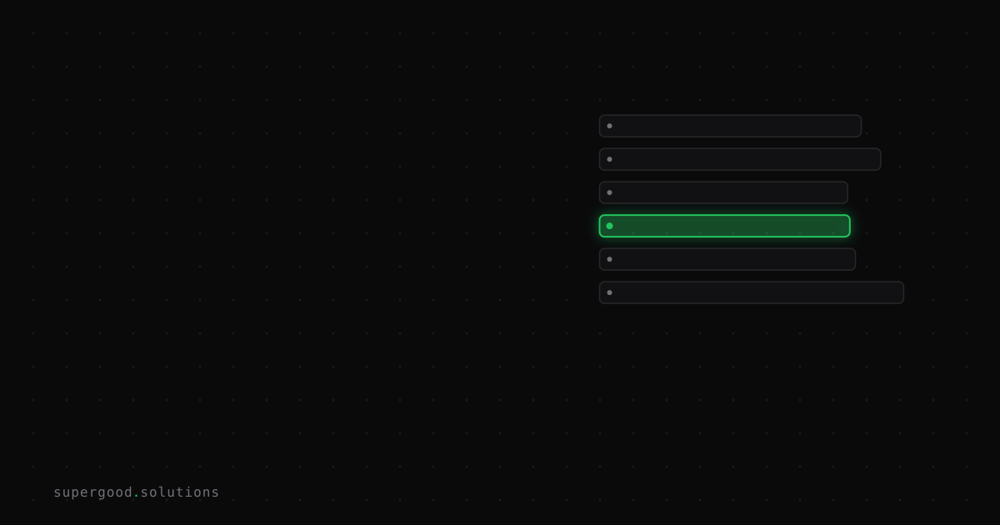

AI Is Collapsing the Window Between Bug Report and Exploit
TL;DR: The average time from CVE disclosure to a working exploit fell from 56 days in 2024 to under 10 hours in 2026 — and in a growing share of cases, the exploit shows up before the fix does. Your patch cycle was built for a 30-day head start that no longer exists, and most enterprise security teams are still running the old playbook.
Key Insight
Patch speed used to be a defensible strategy: find out about a vulnerability, get a fix out, and you'd generally beat the handful of skilled attackers who could reverse-engineer a working exploit from a diff. That race is over. AI systems can now generate a working proof-of-concept exploit for a published CVE in 10 to 15 minutes for about a dollar in compute. The multi-agent framework CVE-Genie reproduced 51% of all CVEs published across 2024–2025 — complete with verifiable, working exploits — at an average cost of $2.77 per CVE. A single agent swarm found more than 100 exploitable kernel vulnerabilities across major hardware vendors in 30 days for a total spend of $600.
Meanwhile, defenders haven't gotten faster in proportion. Enterprise mean time to remediation for complex applications sits at roughly five months and ten days, and about 45% of enterprise vulnerabilities remain unpatched after a full year. Mandiant's M-Trends 2026 found the average vulnerability now gets exploited seven days before a fix even exists. CrowdStrike's 2026 Global Threat Report puts the number of vulnerabilities attacked before public disclosure at 42%. The contest teams have been optimizing for — "patch faster than they can weaponize" — is no longer one you can win by patching faster.
Why Teams Miss This
Most vulnerability management programs still measure success by mean-time-to-patch and treat CVSS severity as the triage signal. Both assumptions predate AI-accelerated exploitation:
- Patch velocity was never going to scale to hours. Change control, regression testing, and staged rollouts exist for good reasons, but none of them were designed to complete in the 10-hour window attackers now operate in. You cannot out-cycle a machine that reads an advisory and has a working exploit before your CAB meeting happens.
- CVSS score is a poor proxy for "will this get weaponized this week." A medium-severity bug with a public PoC and a scriptable exploit path is a bigger near-term risk than a critical-severity bug that requires chained conditions no automated agent has managed to reproduce yet. Teams triaging by CVSS alone are prioritizing the wrong backlog.
- The disclosure advisory is now the attack blueprint, not just documentation for defenders. Responsible disclosure assumed a meaningful gap between "the details are public" and "someone competent enough to weaponize them reads it." AI collapses that gap to the time it takes an agent to parse the advisory.
- "We'll segment later" is a decision, not a placeholder. Teams that treat network segmentation and blast-radius containment as a nice-to-have are the ones getting hit hardest, because segmentation is the only control left that doesn't depend on winning a speed race you've already lost.
How to Actually Do It
- Stop measuring patch success by mean-time-to-patch alone. Add mean-time-to-exploit-resistance. Track how long a given exposed system stays reachable and privileged after disclosure — regardless of whether the patch has landed — by combining virtual patching (WAF/IPS rules, config hardening) with the real fix.
- Re-rank your patch queue by exploitability signals, not just CVSS. Pull in CISA's Known Exploited Vulnerabilities (KEV) catalog and EPSS (Exploit Prediction Scoring System) scores alongside CVSS. A CVE that's in KEV or has a rising EPSS score jumps the line regardless of its base severity.
- Assume the gap between disclosure and exploitation is already negative for anything internet-facing. Design containment for the ones that matter most first: internet-facing services, anything running with broad lateral network access, and anything holding credentials to other systems.
- Automate the boring 80% of patch deployment. If your patch pipeline still requires a human to click "approve" on routine dependency bumps and low-risk config changes, you're spending your fastest-moving resource (people) on the least differentiated work. Reserve human review for changes with real blast radius.
- Build a "patch advisory as attacker blueprint" habit into your own release process. When you publish a security advisory for your own product, assume a working exploit exists in single-digit hours, not days. Have the mitigation guidance, not just the patch, ready to publish simultaneously.
- Red-team your own CVEs with the same AI tools attackers use. Feeding a newly disclosed CVE affecting your stack into an agentic coding tool to see how fast it produces a working PoC tells you your actual exposure window — not the theoretical one in your risk register.
What We've Learned
The teams holding up best under this timeline aren't the ones patching fastest — they're the ones who've already assumed they'll get breached somewhere between disclosure and patch, and have limited how far that breach can travel. Next experiment: pick one internet-facing service in your environment, feed its last three CVEs into an agentic exploit-generation exercise (in an authorized, isolated test environment), and time how long it takes to get a working PoC. That number, not your CVSS dashboard, is your real patch SLA.
Sources
- The Collapsing Exploit Window: AI-Speed Vulnerability Weaponization (Cloud Security Alliance, April 2026)
- The Vulnerability Disclosure Paradox: Why Faster Patching Can't Outrun AI-Generated Attacks (Illumio)
- Synack: AI Collapses CVE Exploit Window to 10 Hours
- CVE-to-Exploit Window Drops to 10 Hours in 2026
- Simon Willison on AI security research
Have a specific workflow in mind?
Bring it to a Quick Scan — a live working session where we'll tell you honestly whether it should be an agent, a workflow, or left alone, before you spend a dollar building it. You get 3 prioritized recommendations on the call, a one-page summary after, and the $500 credited toward any engagement within 30 days.
Get new posts + practical agent-ops notes
One email when something new goes up. No nurture sequence, no spam — unsubscribe whenever you want.